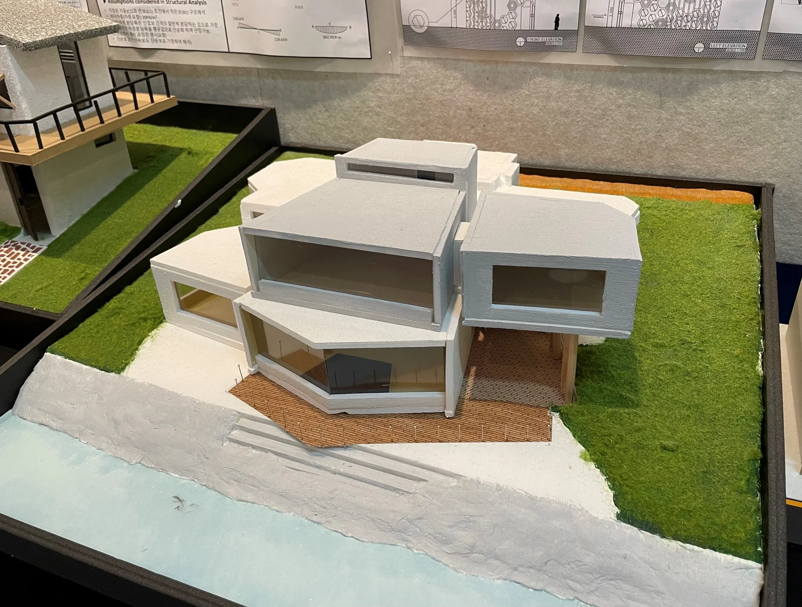

IMAGINARY HOUSE
Capture a Sound
류이치 사카모토를 가상 클라이언트로, 자연의 소리를 받아들이고 음악과 생활이 공존하는 주택을 구상했습니다.
- YEAR / SEMESTER
- 2학년 1학기 · 2022
- PROJECT TYPE
- 상상 주택
- CONTRIBUTION
- 개인 설계 · 가상 클라이언트 과제
- SITE / SUBJECT
- 일본 도야마 구로베호 일대 · 설계 대상지

THE IDEA
생각의 출발점
‘소리를 수집한다’는 생각에서 시작했습니다. 서로 다른 방향의 자연과 소리를 받아들이는 형태를 탐구하고, 음악 작업 공간과 가족의 생활 공간을 관계 지으며 주택을 발전시켰습니다.
- 01
가상 클라이언트
음악가와 가족의 생활·작업에 필요한 공간을 설정했습니다.
- 02
소리를 모으는 형태
방향과 각도가 다른 매스를 실험하며 주변 환경과 건물의 관계를 탐구했습니다.
- 03
설계의 발전
개념 모형에서 스터디 모형, 평면·단면·입면, 최종 모형까지 발전시켰습니다.
PROCESS & OUTCOME
과정과 결과
사진을 누르면 크게 볼 수 있습니다.